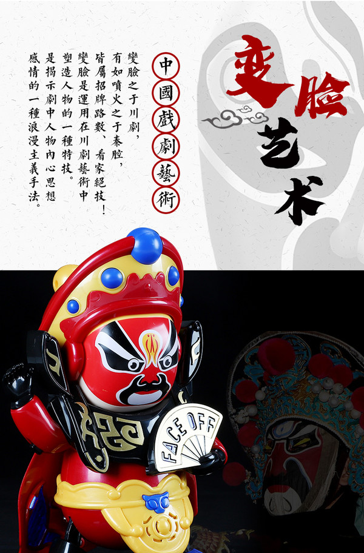
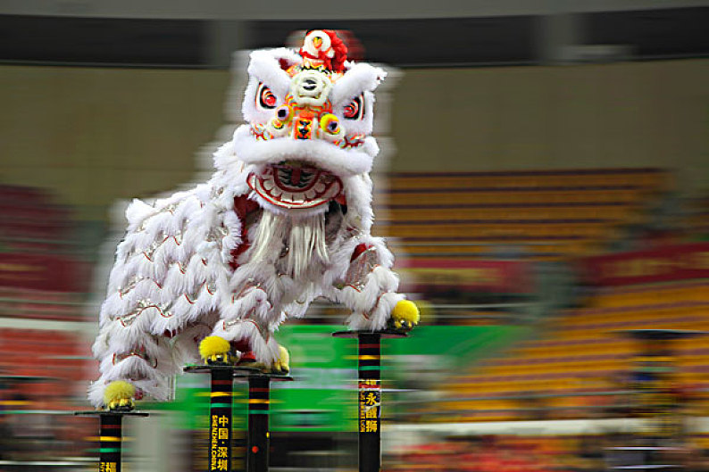
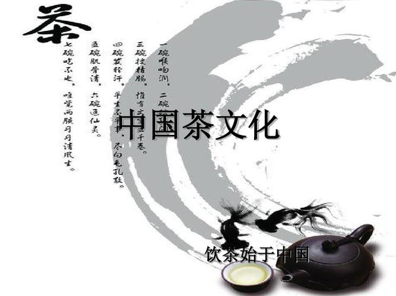

相传“变脸”是古代人类在面对凶猛野兽的时候，为了生存把自己脸部用不同的方式勾画出不同形态，以吓跑入侵的野兽。川剧把“变脸”搬上舞台，用绝妙的技巧使它成为一门独特的艺术。

四川的舞狮是一种古老的民间艺术表演形式，常见于春节和其他重要的传统节日。表演者穿着狮子服装，以舞动的方式模拟狮子的动作，象征着吉祥和祝福。

四川被认为是中国乃至世界种植、制作、饮用茶叶的起源地之一，茶文化源远流长。四川也是中国产茶大省，茶业与茶文化，既促进了经济增长，又改善丰富了人民群众的生活。